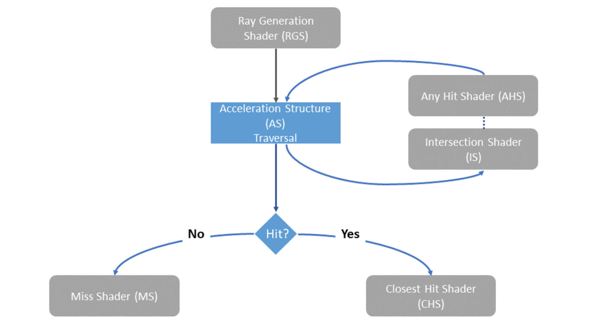

光线追踪#
更新记录
2023/5/12 创建本文
2023/5/12 创建
VK_KHR_acceleration_structure章节2023/5/12 创建
VK_KHR_ray_tracing_pipeline章节2023/5/12 创建
VK_KHR_ray_query章节2023/5/12 创建
VK_KHR_pipeline_library章节2023/5/12 创建
VK_KHR_deferred_host_operations章节2023/5/12 创建
光追最佳实践章节2023/5/12 发布完成
在 Vulkan API 中有5个与光追相关的扩展
另外也发布了着色器对应 SPIR-V 和 GLSL 所需要的扩展
备注
很多光追程序都需要分配大量连续内存，由于内存地址空间大小的限值，在32位系统上实现很考验实现能力。虽然可以在32位系统上实现，但是应用可能面临着时不时的内存问题，比如分配内存失败。 此外一些驱动实现可能根本不会在32位系统中显示支持。
VK_KHR_acceleration_structure#
加速结构在光追中用于描述几何物体的（内部具体实现是驱动自定义的）。通过将几何体构建进加速结构，光追可基于此种已知的数据布局进行高效计算。
VK_KHR_acceleration_structure 扩展提供了构建和拷贝加速结构的功能，并且支持与内存进行序列化。
加速结构需要光追管线 VK_KHR_ray_tracing_pipeline 和光线查询 VK_KHR_ray_query 两个扩展
对于加速结构的创建：
备注
加速结构的 创建 和 构建 是两个不同的东西，创建是创建加速结构实例，构建是构建加速结构内部数据和结构。
使用
VkAccelerationStructureBuildGeometryInfoKHR声明加速结构的类型、几何类型、数量和最大大小。此时真正的几何数据可以不指定。调用
vkGetAccelerationStructureBuildSizesKHR获取构建加速结构时的需要的内存大小分配一个足够大的缓存用于存储加速结构（
VkAccelerationStructureBuildSizesKHR::accelerationStructureSize）和暂存缓存（VkAccelerationStructureBuildSizesKHR::buildScratchSize）调用
vkCreateAccelerationStructureKHR创建一个加速结构（位于某一个缓存中特定位置）调用
vkCmdBuildAccelerationStructuresKHR去构建加速结构，之前提到的VkAccelerationStructureBuildGeometryInfoKHR在此时会被作为参数，将会根据声明的加速结构实例、构建暂存缓存和真正的几何数据（顶点，索引和变换）进行构建
VK_KHR_ray_tracing_pipeline#
VK_KHR_ray_tracing_pipeline 扩展用于光追管线。光追管线是区别于常见光栅化管线的独立渲染管线，光追管线使用一组专用着色器，与传统的顶点、几何、片元着色器独立。并且光追管线也提供独立的渲染指令（ vkCmdTraceRaysKHR 和 vkCmdTraceRaysIndirectKHR ）。
这与传统的光栅化绘制类似（ vkCmdDraw 和 vkCmdDrawIndirect ）。
为了追踪光线：
使用
vkCmdBindPipeline绑定光追管线于VK_PIPELINE_BIND_POINT_RAY_TRACING_KHR上。调用
vkCmdTraceRaysKHR或vkCmdTraceRaysIndirectKHR
与光追管线有关的着色器如下：
Ray generation shader光线生成着色器，作为光追管线的起点。与计算着色器类似将会执行一组着色器调用（vkCmdTraceRaysKHR和vkCmdTraceRaysIndirectKHR）。光线生成着色器将会生成光线并且通过在着色器中调用traceRayEXT()进行追踪。并且处理光线相交结果的集合。Closest hit shaders最近命中着色器将会在最近命中几何体时执行。应用支持任意数量的最近命中着色器。此着色器最常用于光照计算并继续追踪额外的光线。Miss shaders未命中着色器与最近命中着色器相反，当光线没有与任何几何体相交时未命中着色器会被调用。该着色器常用于采样环境纹理。Intersection shaders相交着色器允许自定义处理光线相交，并且内置的相交测试是基于三角形进行测试。Any hit shaders任意命中着色器，与最近命中着色器类似，任意命中着色器在检测到发生相交时调用，任意命中着色器不同的是只要相交发生在[tmin, tmax]之间而不是最近的一次命中。任意命中着色器用于过滤相交和透明度测试。
VK_KHR_ray_query#
VK_KHR_ray_query 扩展支持在所有类型着色器中进行光线追踪，包括图形、计算和光追管线。
光线查询要求光线遍历代码必须位于着色器中。与光追管线不同的是，在光追管线中光线生成、求交测试和光线与几何体击中处理，都是在独立不同的着色器阶段。
所以光线查询允许在广泛的着色器阶段进行光线追踪，当然也有代价，这会限值 Vulkan 的驱动实现对于光追调度的优化。
该扩展不引入额外的 API 入口点，其仅仅使用 SPIR-V 和 GLSL 的扩展（ SPV_KHR_ray_query 和 GLSL_EXT_ray_query ）。
VK_KHR_ray_query 所提供的功能与 VK_KHR_ray_tracing_pipeline 互补，并且两个扩展可以同时使用。
rayQueryEXT rq;
rayQueryInitializeEXT(rq, accStruct, gl_RayFlagsTerminateOnFirstHitEXT, cullMask, origin, tMin, direction, tMax);
// Traverse the acceleration structure and store information about the first intersection (if any)
rayQueryProceedEXT(rq);
if (rayQueryGetIntersectionTypeEXT(rq, true) == gl_RayQueryCommittedIntersectionNoneEXT) {
// Not in shadow
}
VK_KHR_pipeline_library#
VK_KHR_pipeline_library 用于管线库，一个管线库是使用 VK_PIPELINE_CREATE_LIBRARY_BIT_KHR 创建的特殊管线，其并不能直接绑定和使用，而是用于代表一组着色器或着色器组和相关其他管线相关的状态。
VK_KHR_pipeline_library 并没有直接增加新 API 也没有定义如何创建管线库，而相关的功能是交于那些使用 VK_KHR_pipeline_library 提供功能的扩展。
当前仅仅提供了 VK_KHR_ray_tracing_pipeline 的例子。
当前仅仅提供了 VK_KHR_ray_tracing_pipeline 的例子
在 KhronosGroup 的 Vulkan-Samples 项目中目前已经不单单只有 VK_KHR_ray_tracing_pipeline 例子，还有 其他扩展示例。
VK_KHR_pipeline_library 被定义成独立的扩展，为了是在未来其它扩展共用此扩展而不需要依赖于光追扩展。
对于创建光追管线库：
当调用
vkCreateRayTracingPipelinesKHR时指定VkRayTracingPipelineCreateInfoKHR::flags中有VK_PIPELINE_CREATE_LIBRARY_BIT_KHR
对于将光追管线链接到一个完整管线中：
设置
VkRayTracingPipelineCreateInfoKHR::pLibraryInfo指向一个VkPipelineLibraryCreateInfoKHR实例指针将
VkPipelineLibraryCreateInfoKHR::pLibraries中设置的管线作为管线库中用于输入连接的管线，并且设置VkPipelineLibraryCreateInfoKHR::libraryCount设置适当值
VK_KHR_deferred_host_operations#
VK_KHR_deferred_host_operations 提供了将繁重的 CPU 的工作通过多线程进行分摊的机制。 VK_KHR_deferred_host_operations 被设计成允许应用创建和管理线程。
和 VK_KHR_pipeline_library 类似， VK_KHR_deferred_host_operations 也是个独立的扩展，目的也是为了在未来其他扩展共用该扩展功能。
只有在标注了支持延迟操作时才可以进行延迟操作。当前支持的延迟操作为 vkCreateRayTracingPipelinesKHR 、 vkBuildAccelerationStructuresKHR 、 vkCopyAccelerationStructureKHR 、 vkCopyMemoryToAccelerationStructureKHR 和 vkCopyAccelerationStructureToMemoryKHR 。
为了操作时延迟的：
通过
vkCreateDeferredOperationKHR创建一个VkDeferredOperationKHR句柄将
VkDeferredOperationKHR作为参数调用需要的延迟操作- 通过返回的
VkResult查看之前的操作结果： VK_OPERATION_DEFERRED_KHR表示延迟操作成功VK_OPERATION_NOT_DEFERRED_KHR表示操作立即成功完成了其他任意错误值表示有错误发生
- 通过返回的
将一个线程加入到一个延迟操作，并且消耗 CPU 时间去处理该操作：
对于每个想要参与操作的线程调用
vkDeferredOperationJoinKHR- 通过
vkDeferredOperationJoinKHR返回的VkResult查看操作结果： VK_SUCCESS表示操作完成VK_THREAD_DONE_KHR表示当前调用的线程已经没有要分配的工作了，但是其他的线程可能还在处理额外的工作。当前的线程不应该再通过vkDeferredOperationJoinKHR再次joinVK_THREAD_IDLE_KHR表示当前调用的线程暂时已经没有要分配的工作了，但是其他额外的工作可能会在不期到来。当前的线程应该执行其他有用的工作，并且调用vkDeferredOperationJoinKHR再次join以此达到高收益。
- 通过
当一个延迟操作完成后（比如 vkDeferredOperationJoinKHR 返回了 VK_SUCCESS ），调用 vkGetDeferredOperationResultKHR 获取延迟操作的结果。
光追最佳实践#
最小化并行访问光线查询对象的线程数量#
光线查询对象对于线程的部分私有存储是非常昂贵的，对性能的消耗也是如此，所以用的越少越好。在绝大多数情况下应该使用一个光线查询对象就算追踪多条光线，当一个结束的 光线发射了其他光线的话亦可以使用同一个光线查询对象。只用当多个光线遍历需要并行执行时光线查询才可在同一着色器中。
最小化光线、击中属性和可调用数据大小#
光追着色器各阶段可以通过光线负载结构在所有的遍历阶段、遍历控制着色器的击中属性结构、可调用着色器的可调用数据之间进行参数和结果的访问。
这三个结构体都会消耗驱动管理内存，具体消耗多少依赖于结构本身、并行的光线数量和其他因素，比如递归层级。
着色器需要保持这些结构尽量的小。
多用设备本地的内存#
设备本地的内存
设备本地的内存，多称为 device-local 或 device 端，其多指 GPU 设备中的内存。而 host 端多指 CPU 使用的内存条的内存，为系统内存。
其实也不绝对，有时内存条上的部分内存为 device 端和 host 端公有的内存，具体设备具体实现。
加速结构可以建立在 Vulkan 的任何内存堆上，使用内存在本地设备的加速结构进行光线追踪会得到更加优良的性能，并且应该是首选。
对于使用 host 端的内存（比如 GPU 可访问的系统内存）只有当设备本地数据的大小有限时才考虑使用，其光追性能大概率到不了设备本地内存的性能。